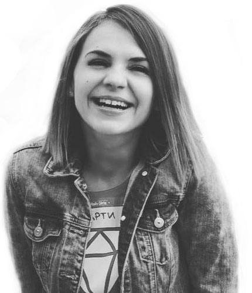

Martina Koleva
A marketing professional and a design enthusiast with experience in project management, branding and event organization. Passionate about creating experiences that inspire.
I have a strong interest in child education and I am a co-founder of CoderDojo Bulgaria, member of the Rails Girls Sofia organization team and a spirited volunteer at Bansko Film Fest.
Drop a line at: hi@martinakoleva.com
